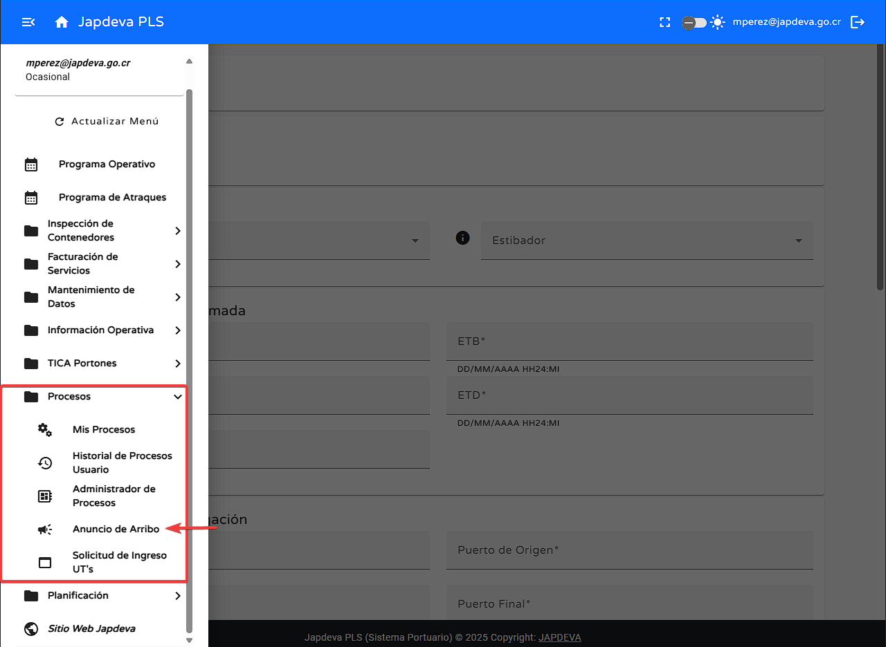
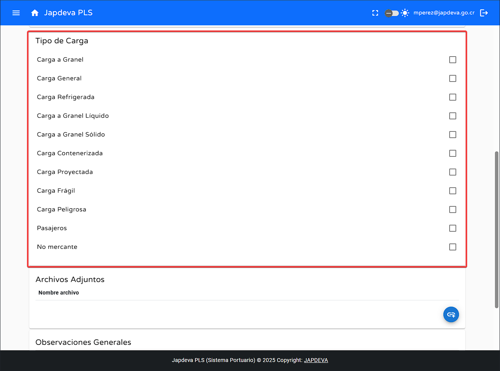

Bienvenido a la guía de usuario para la pantalla de Anuncio de Arribo del sistema PLS. Esta
guía esta diseñada para ayudarte a utilizar y comprender de una forma más sencilla y directa las diversas
funcionalidades que ofrece esta pantalla en concreto.
1. Introducción
La pantalla Anuncio de Arribo se encuentra en el menú dentro del submenú
Procesos como un submenú total que ofrece la oportunidad de registrar de manera precisa
todo lo
relacionado con la llegada de una embarcación a puerto (Limón o Moín) anexando toda la información relevante
a la misma para así obtener un control y gestión de tiempos eficiente.

Consejo: Esta guía está diseñada para ser leída en orden, pero puedes saltar a las
secciones que necesites usando el menú de contenido.
2. Funciones principales
1
Función básica
Para realizar la función principal:
Haz clic en Seleccionar
Seleccionamos la embarcación con la cual deseamos registrar el anuncio de arribo dando clic en la
checkbox que se encuentra al lado de la misma.
Presiona Aceptar
2
Registro de datos relacionados con el anuncio de arribo
Para conseguir realizar de manera satisfactoria el registro de los datos relacionados con el anuncio de
arribo debemos de seguir los siguientes pasos:
En la pantalla de anuncio de arribo (Con la nave ya seleccionada) Comenzamos a
seleccionar los
diversos datos necesarios para el registro de anuncio de arribo de la siguiente forma.
Comenzando con los actores que serían tanto la línea naviera como el grupo de
estibador encargado de la embarcación y todos los procesos que se realizaran al momento de llegar al
puerto.
El siguiente conjunto de información a completar serían los datos de llegada estimada, siendo estos
los siguientes (yendo de izquierda a
derecha):
ETA: Fecha y hora de arribo estimado.
ETC: Fecha y hora de llegada real.
Calado: Este dato debe ser proyectado en metros.
ETB: Fecha y hora de atraque estimado.
ETD: Fecha y hora de zarpe estimado.
Advertencia: Todos los datos anteriores son de índole obligatoria.
El siguiente conjunto de información a agregar sería la Información de Navegación
donde se deben de anexar los siguientes datos:
Puerto inicial: Desde donde llega la embarcación (El puerto anterior).
Puerto destino: Hacia donde se dirige la embarcación.
Puerto de origen: De donde proviene la embarcación.
Puerto final: Último puerto a donde debe llegar la embarcación.
Advertencia: Todos los anteriores datos son de índole obligatoria.
Como antepenúltimo paso, debemos de seleccionar el Tipo de Carga que transporta el
buque.

Advertencia: Se deben seleccionar todos los tipos de carga que se encuentren en el
buque siempre y cuando se encuentre en la lista de tipos de carga.
El penúltimo paso sería agregar Archivos Adjuntos si los hay mediante el ícono de
seleccionar archivos y anexando solo los tipos de archivos permitidos por el sistema.
Finalmente, puedes agregar Observaciones que ayuden a la gestión del arribo.
Con todos los datos necesarios ya registrados y verificados se puede presionar Registrar
3. Solución de problemas
Problema común 1
Síntoma: En la sección Datos de la nave puede que no haya información a
proyectar para la selección de buque.
Solución: Verificar si los datos de la nave están registrados previamente en la base de
datos.
Problema común 2
Síntoma: Falta de información a manejar en la sección de Actores.
Solución: Verificar que la información necesaria esté realmente registrada en los datos
disponibles.
Paso 1 para resolver: Para verificar la información relacionada a Línea
Naviera en actores se puede ir al submenú Mantenimiento de Datos en el
apartado Stakeholders
Paso 2 para resolver: Una vez visualizado el listado de stakeholders y verificar si se
encuentra el deseado a usar en el apartado de Anuncio de Arribo en caso que no se
encuentre, puedes agregar uno nuevo en ese mismo apartado.